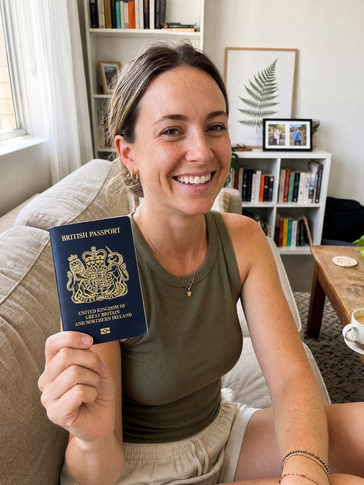
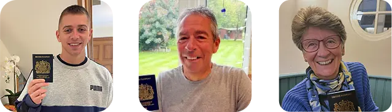
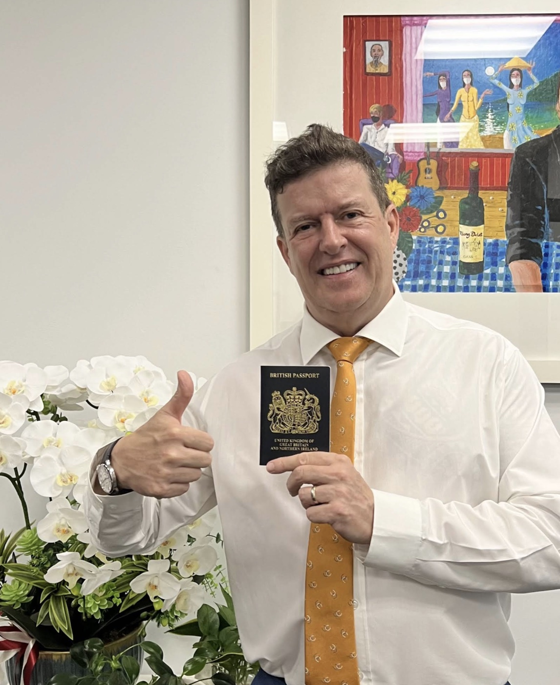
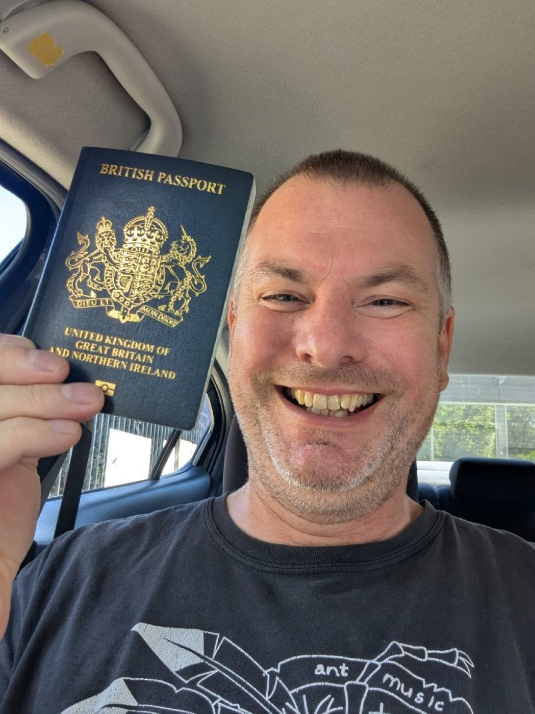
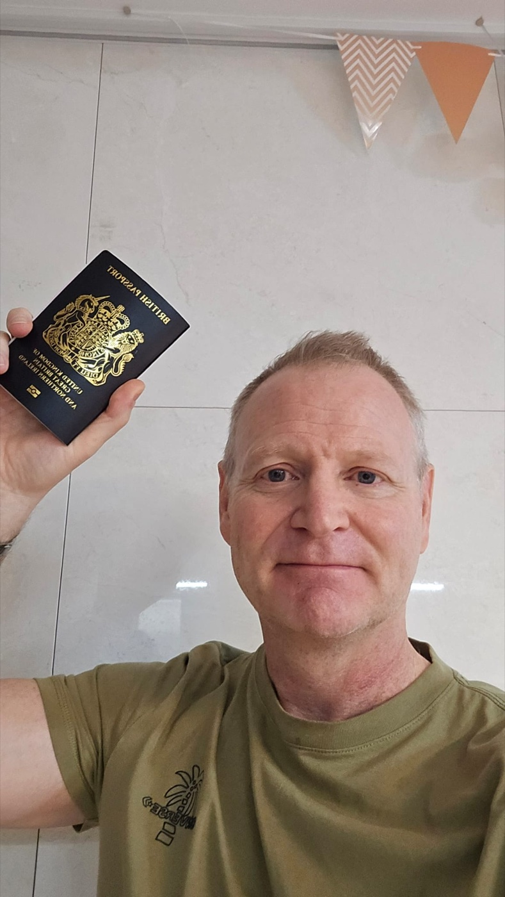
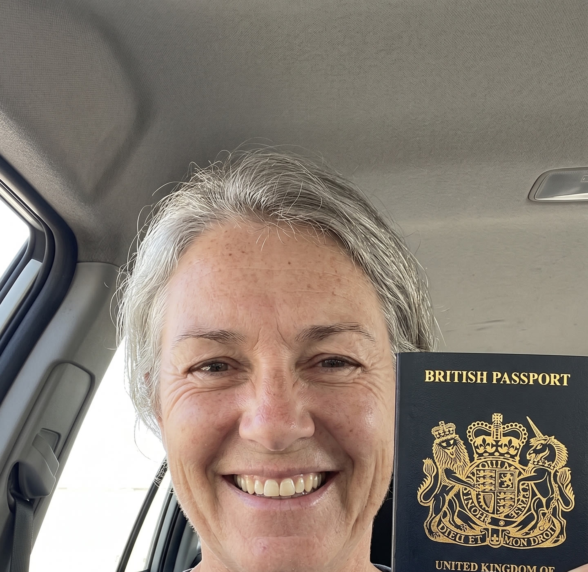

R01
Renew a UK passport
For British citizens abroad with an expired or expiring adult passport.
2 weeks or less, guaranteed
Urgent UK passport services from overseas
For British citizens living overseas who need a UK passport renewed, replaced, updated or applied for—without flying back to the UK.
No flight home. No standard overseas wait. No HMPO queue.
Travel-rule check
British and Irish citizens cannot obtain a UK ETA. If your British passport is expired, very old, lost, damaged or you have never held one, sort it before you travel—not at the airport.
Choose your service
Fast, managed passport services for British citizens living anywhere in the world.
For British citizens abroad with an expired or expiring adult passport.
Cancel, replace and securely return an eligible British passport from overseas.
First child passports and child renewals, managed from abroad.
Update a passport after marriage, divorce, deed poll or another details change.
Document-led applications for British citizens who have never held a UK passport.
A specialist assessment for passports issued years ago or unclear passport histories.
Answer a few quick questions and we will point you to the right service.
Genuine client stories
These are real ASAP clients sharing the moment their British passport was back in their hands—and their travel plans were back on.
Charlotte's story
Tap play to watch Charlotte share her experience—from overseas passport stress to passport in hand.






Passport service finder
Answer three quick questions and go straight to the secure application route that fits your situation.
A clear route before paymentWe explain the likely service, timing and price before you continue.
A real person manages the processYour case does not disappear into a generic overseas queue.
A managed UK-side process
We handle the complicated parts so the process feels simple, certain and fast.
Select your passport service and pay securely online.
Fill in your guided application details from wherever you live.
We review your documents and photo before submission.
DHL Express collects your documents where required.
ASAP manages the UK-side process with HM Passport Office.
Your new passport is returned by secure worldwide courier.
Clear about who we are
ASAP Passports is an independent UK company and registered passport agent. Your passport is still issued by HM Passport Office. We manage the application through our direct UK-side process, check your documents, coordinate secure DHL Express collection and return delivery, and keep you updated.
You get a named, managed service—not a government queue.
Clear, all-inclusive pricing
Fees include our service, HM Passport Office fees, required courier collection and secure worldwide return.
Guarantee timing: begins when your complete document pack and/or passport is collected from you.
More time? A standard non-urgent renewal from £399 may be available. Ask the team.
Client proof
★★★★★“Passport delivered in 10 days, with proactive support from the first call.”
★★★★★“Every step was clear, communication was constant, and the result arrived faster than expected.”
★★★★★“ASAP turned an overseas renewal into a managed, calm process with a real person guiding it.”
Why British citizens overseas choose ASAP
Missing evidence, wrong photos, old passport histories, name mismatches and courier delays can stall an application for weeks. ASAP gives you access to a managed UK-side process you cannot practically complete yourself from abroad.
Get my UK passport fast →Worldwide service
From Australia to the USA and everywhere in between, your case is managed through the same trusted UK-side process.
Buying questions, answered
Have a unique situation? Call our 24-hour team and speak with a real passport specialist.
Call 0800 774 7666Eligible adult renewals can be completed in 2 weeks or less, guaranteed. Eligible replacements, child renewals and name changes are 3 weeks or less, guaranteed. First-time applications are usually around 4 weeks on a best-endeavours basis.
If we miss the published turnaround on an eligible guaranteed service, you receive a full refund. The clock starts when your complete document pack and/or passport is collected from you—not when you pay.
The displayed price includes the ASAP service fee, HM Passport Office fees, DHL Express courier collection, secure global air freight and return delivery. If extra official evidence is required, we quote before spending anything.
No. You apply online from abroad, we check your documents, DHL Express collects what is required, and ASAP manages the UK-side application process with HM Passport Office before secure return delivery.
No. ASAP Passports is an independent UK company and registered passport agent. Your passport is still issued by HM Passport Office; we manage the process and logistics for you.
We prevent avoidable delays by pre-checking your application pack, then manage the UK-side process from lodgement through collection and secure return. No flight home, no standard overseas wait and no HMPO queue.
It depends on the issue date. Passports issued after 2002 may qualify for VIP renewal; 1994–2001 may route to Gold; pre-1994 or unclear histories are normally assessed as first-time applications.
You complete a guided application, we check your documents and photo, arrange DHL Express collection where required, manage the application with HM Passport Office, and keep you updated until secure delivery.
Urgent travel plans?
No flight home. No standard overseas wait. No HMPO queue.